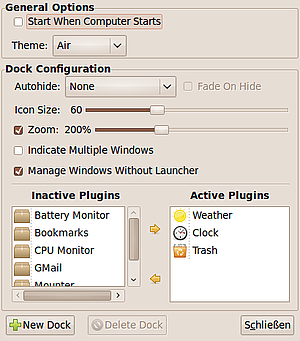

Docky
Dieser Artikel wurde für die folgenden Ubuntu-Versionen getestet:
Ubuntu 14.04 Trusty Tahr
Zum Verständnis dieses Artikels sind folgende Seiten hilfreich:
 Docky
Docky  ist eine auf Mono basierte Anwendungsstartleiste (Dock), die ursprünglich Teil von GNOME Do war. Da der gemeinsame Quelltext aber zunehmend schwieriger zu handhaben und pflegen war, wurde Docky abgespalten und ist nun getrennt von GNOME DO verfügbar. Es ähnelt den Projekten Avant Window Navigator, Cairo-Dock und wbar, die alle das Dock von Mac OS X als Vorbild haben.
ist eine auf Mono basierte Anwendungsstartleiste (Dock), die ursprünglich Teil von GNOME Do war. Da der gemeinsame Quelltext aber zunehmend schwieriger zu handhaben und pflegen war, wurde Docky abgespalten und ist nun getrennt von GNOME DO verfügbar. Es ähnelt den Projekten Avant Window Navigator, Cairo-Dock und wbar, die alle das Dock von Mac OS X als Vorbild haben.
Für eine korrekte Darstellung muss ein Composite-Manager aktiv sein. Ohne Transparenz-Effekte funktioniert dagegen Plank, dafür muss man auf zahlreiche Zusatzfunktionen verzichten.
Installation¶
Docky ist in den offiziellen Paketquellen enthalten. Folgendes Paket muss installiert werden [1]:
docky (universe)
 mit apturl
mit apturl
Paketliste zum Kopieren:
sudo apt-get install docky
sudo aptitude install docky
PPA¶
Die Entwicklerversion von Docky steht bis Ubuntu 15.10 über ein "Personal Package Archiv" (PPA) [2] zur Verfügung. Sie ist nicht für den produktiven Einsatz gedacht.
Adresszeile zum Hinzufügen des PPAs:
ppa:docky-core/ppa
Hinweis!
Zusätzliche Fremdquellen können das System gefährden.
Ein PPA unterstützt nicht zwangsläufig alle Ubuntu-Versionen. Weitere Informationen sind der  PPA-Beschreibung des Eigentümers/Teams docky-core zu entnehmen.
PPA-Beschreibung des Eigentümers/Teams docky-core zu entnehmen.
Damit Pakete aus dem PPA genutzt werden können, müssen die Paketquellen neu eingelesen werden.
Nach dem Aktualisieren der Paketquellen erfolgt die Installation wie oben angegeben.
Einrichtung¶

Nach der Installation kann das Programm mit docky gestartet werden [3]. Die Konfiguration von Docky geschieht mit  auf das Docky-Symbol und dem Menüpunkt "Show Preferences" bzw. "Einstellungen". Das Menü ist sehr übersichtlich gehalten.
auf das Docky-Symbol und dem Menüpunkt "Show Preferences" bzw. "Einstellungen". Das Menü ist sehr übersichtlich gehalten.
Nun kann man einstellen, ob Docky beim Hochfahren des Rechners gestartet, wie viele Docks es geben, in welchem Design sie dargestellt werden und wo sich diese befinden sollen. Die Docks können an jedem Bildschirmrand (rechts, links, oben und unten) platziert werden, indem man im geöffneten Einstellungsmenü das Dock an den gewünschten Rand zieht. Weiterhin können Größe und Zoomverhalten beim Darüberfahren mit der Maus sowie das Ein- und Ausblendeverhalten festgelegt werden. Zu guter Letzt kann man noch einen Panel-Modus wählen.
In den Einstellungen legt man auch fest, welche zusätzlichen Plugins das Dock zieren sollen.
Bedienung¶
Symbole bzw. Starter¶
Um Anwendungsstarter zu Docky hinzuzufügen, müssen diese per Ziehen-und-Ablegen bei gedrückter  einfach nur hineingeschoben werden. Um sie zu entfernen, von da wieder herausziehen.
einfach nur hineingeschoben werden. Um sie zu entfernen, von da wieder herausziehen.
Programm schliessen¶
Durch kann mit dem Menüpunkt "Docky beenden" das Programm einfach geschlossen werden.
Plugins¶
Derzeit stehen unter anderem folgende Plugins zu Verfügung:
"Battery Monitor" - Akkustandanzeige
"Bookmarks" - Nautilus-Lesezeichen
"Clock" - Uhr: analog oder digital mit Kalender (letzteres nur bei horizontaler Leiste)
"CPU Monitor" - Prozessor- und Speicher-Auslastungsanzeige, Verknüpfung zur Systemüberwachung
"GMail" - Bietet schnellen Zugriff auf Googlemail-Konten
"Mounter" - Zeigt eingebundene Laufwerke
"Network Manager" - Steuert Netzwerkverbindungen
"Recent Documents" - Zuletzt geöffnete Dokumente anzeigen
"Timer" - Bietet einen 30sec Countdown
"Trash" - Mülleimer
"Weather" - Zeigt Wetterdaten und Vorhersage von einer oder mehreren Städten. Daten können von verschiedenen Anbietern bezogen werden.
Problembehebung¶
Fenster lassen sich nicht mehr maximieren¶
In den Einstellungen stellt man "Verbergen" auf "Allen Fenstern ausweichen" und aktiviert "Ausblenden". Nun öffnet man den GNOME-Konfigurationseditor [3] und ändert den Wert "/apps/docky-2/Docky/Interface/DockPreferences/Dock1/FadeOpacity" auf 1. Dock1 kann auch eine andere Zahl haben.
Diese Änderung stellt die Deckkraft von Docky auf den Maximalwert 1 und ist somit sichtbar. Man kann auch einen kleineren Wert nehmen, womit Docky immer noch sichtbar ist, aber man auch den Inhalt des darunterliegenden Fensters sehen kann. Anschließend muss man Docky neustarten.
Links¶
Remove anchor icon from docky
- Blogbeitrag, 04/2010Docky und Gnome-Shell installieren
- Blogbeitrag, 10/2009Docks und andere Anwendungsstarter
 Programmübersicht
Programmübersicht
- Erstellt mit Inyoka
-
 2004 – 2017 ubuntuusers.de • Einige Rechte vorbehalten
2004 – 2017 ubuntuusers.de • Einige Rechte vorbehalten
Lizenz • Kontakt • Datenschutz • Impressum • Serverstatus -
Serverhousing gespendet von